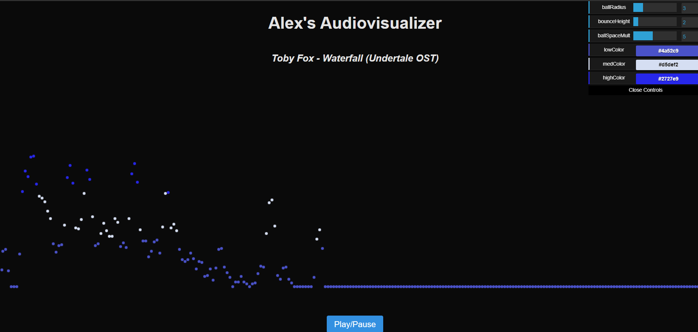

Alex's Audiovisualizer
This was a project that I created for my web development class. It's a simple customizable audiovisualizer using HTML Canvas, Web Audio API, and dat.gui that plays a song from the Undertale soundtrack.
I wanted to achieve the effect of watching little balls bounce to the music, so I utilized Web Audio API's real-time audio waveform analysis tools to move colorful spheres based on the amplitude (volume) of the song at certain frequencies. If the amplitude for a certain frequency range passed a certain threshold,
To make the audiovisualizer interactable, I utilized the dat.gui framework to create a simple interface allowing users to modify the audiovisualizer's parameters in real time using sliders, color pickers, and text input.